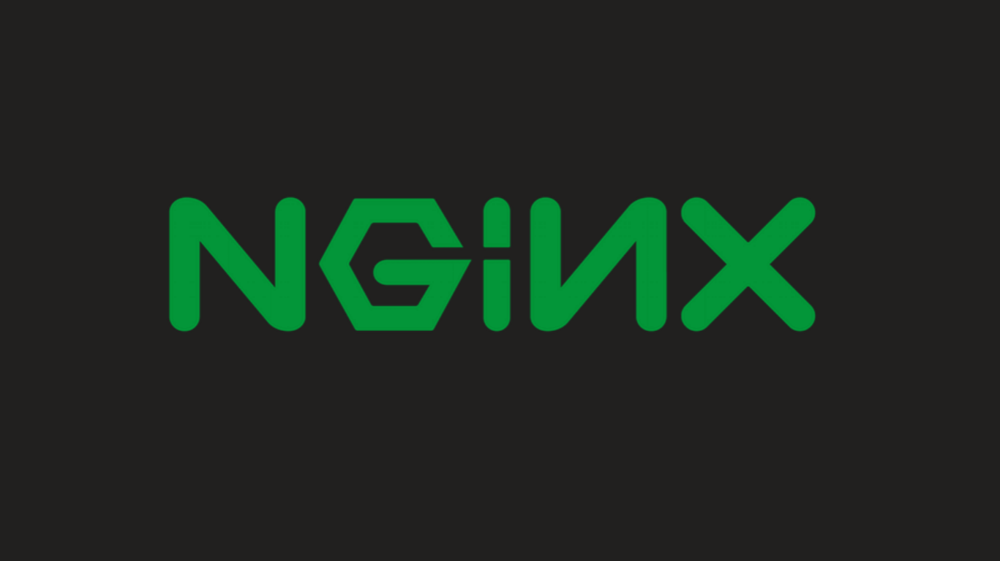

Deploy NGINX Server

About This Project
En este proyecto enseño como Configurar y publicar un servidor web, utilizando NGINX. servidor web ligero y de alto rendimiento
Adicionalmente utilizo un repositorio, para clonar la pagian inxex
Steps
- 1. Crear server en Upcloud
- 2. Login con Putty
- 3. sudo apt-get upgrade
- 4. sudo apt install vim
- 5. sudo apt install nginx
- 6. habilitar puertos http
- sudo ufw allow 80
- 7. Verificar server desde browser
- abra el navegador e ingrese la ip del servidor
- Se muestra la pagina de inicio de Nginx
- 8. Configurar NGINX
- cd /etc/nginx/sites-available/
- cp default Devops.com
- rm default
- vim Devops.com
- cambiar la linea que dice server_name y host "/var/www/html/nginx"
- 9. habilitar sitios
- cd ..
- cd sites-enabled/
- ln -s ../sites-available/Devops.com (Crear link simbólico)
- 10. modificar host
- vim /etc/hosts (agregar IP)
- 11. reiniciar server
- nginx -s reload
- 12. Verificar server desde browser
- Error 404
- 13. Clonar repositorio
- cd /var/www/html/
- Git clone Repositorio
- 14. Verificar server desde browser
- Se muestra pagina de inicio